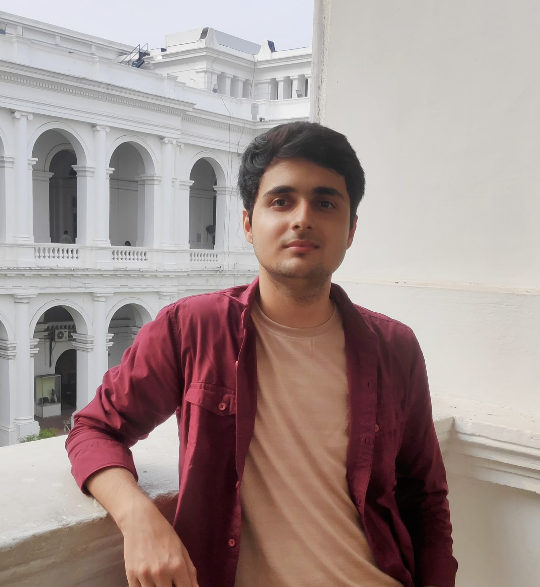

Research Projects
Weak-Value Amplification in Polarized Light
using the formalism of quantum weak measurements, studied the weak value amplification (WVA) in polarimetry in a Mach-Zehnder-Interferometer.
“Loading…”

I'm a final-year BS–MS Physics student at IISER Kolkata, working at the intersection of quantum foundations and quantum information. My recent work has focused on weak measurement theory and what it reveals about quantum systems that strong measurement cannot.
I'll be starting my Master's thesis at the Harish-Chandra Research Institute under Prof. Ujjwal Sen, working on quantum communication and entanglement theory.
Looking ahead, I hope to pursue doctoral research on the mathematical and conceptual aspects of quantum information theory and quantum foundations.
About
My early research was really a period of exploring — on the advice of a professor in my second year, I tried my hand at fluid dynamics, then optics, before being introduced to quantum weak measurement. That one stuck. It grew into a year-long project and, over time, shaped my deeper interest in foundational quantum physics.
I'm now heading into my Master's thesis at HRI, focusing on quantum communication and entanglement theory, while keeping an eye on how these threads connect through the resource-theoretic view of quantum mechanics.
Outside physics, I enjoy teaching and motivating school students toward science, dancing, sketching, and picking up new skills — I'm currently (still) learning to drive and swim. I also spend time with friends and family, and I'm always up for a good movie.
2026 – 2027
Master Thesis Student
HRI Prayagraj, India — Quantum Communication, under Prof. Ujjwal Sen
2025 – 2026
Weak-Value Amplification in Polarized Light
IISER Kolkata, India — with Prof. Nirmalya Ghosh
May – July 2025
Summer Research Internship
IISER Kolkata, India — Spin–direction coupling in plasmonic, with Prof. Nirmalya Ghosh
May – July 2024
Summer Research Internship
IIT Kharagpur, India — Numerical fluid dynamics, with Prof. Vishwanath Shukla
2022 – 2027
B.S-M.S (dual degree) Physics
IISER Kolkata, India
Research
My research sits within quantum information theory and the foundations of quantum mechanics. I'm particularly interested in the following fields,
why , what specific
why , what specific
why , what specific
why , what specific
Projects
Research Projects
using the formalism of quantum weak measurements, studied the weak value amplification (WVA) in polarimetry in a Mach-Zehnder-Interferometer.
Research Projects
Derived the weak measurement formalism of Aharonov, Albert & Vaidman (AAV) and Duck, Stevenson & Sudarshan (SSD), and numerically reproduced key results on weak-value amplification and its sensitivity to pre- and post-selection.
Course Project
A theoretical study of complementarity, entanglement, and quantum measurement through the delayed-choice quantum eraser thought experiment. (Prof. Sourin Das, IISER Kolkata)
Summer Internship
Numerically simulated spin–direction coupling in waveguided plasmonic crystals under tight focusing, demonstrating spin-dependent directional guiding and direction-dependent spin acquisition.
Course Notes
This note contains Python implementations of a broad range of numerical methods.
Course Project
I studied how Hodgkin–Huxley (HH) model can reproduces normal action potentials and also helps explain Myotonia and Hyperkalemic Periodic Paralysis (HPP) disorder.
Summer Internship
Numerically simulated the 2D Navier–Stokes and Toner–Tu equations using Dedalus, analyzing vortex dynamics and energy cascades.
Publications
Nothing published yet
Peer-reviewed papers and preprints will be listed here as they are submitted. In the meantime, see the Projects section for ongoing work.
Blog
Occasional posts on physics, research life, and things I've been reading.
First post is on its way
This is where short write-ups and explainers will appear. Check back soon.
Get in touch
I'm always happy to hear from prospective supervisors, collaborators, or fellow students working on related questions. Email is the fastest way to reach me.
Email me